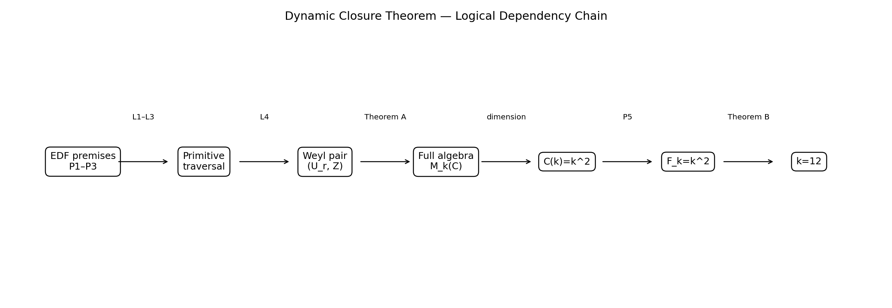
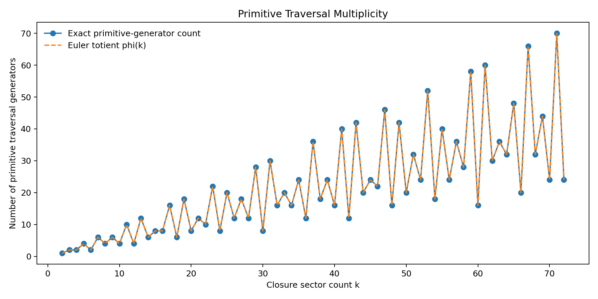
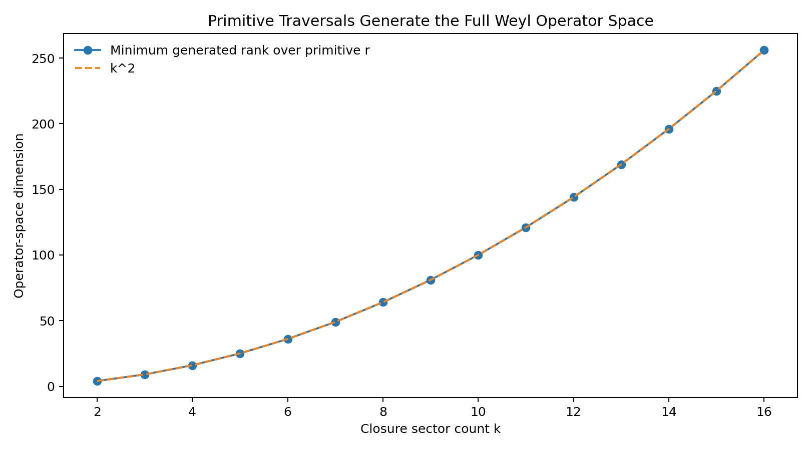

Entry 08
Consolidation of the Dynamic Closure Theorem (DCT)
Entry 08 introduces no new physical mechanism.
entry_08
Outputs folder: output
Figures
Click any figure to enlarge it.
{kind=link}

primitive_generator_count.png
{kind=link}

primitive_traversal_operator_dimension.png
{kind=link}
Tables
Embedded previews of CSV/TSV outputs with links to the full raw files.
| result_id | result | depends_on | status |
|---|---|---|---|
| L1 | Delta_phi = 2*pi*r/k | P1, P2 | Exact conditional lemma |
| L2 | gcd(k,r)=1 | P3 + L1 | Exact conditional lemma |
| L3 | U_r=X^r and X=(U_r)^s | L2 | Exact group-theoretic lemma |
| L4 | Z U_r = omega_k^r U_r Z | P1 + L3 | Exact operator identity |
| T_A | alg(U_r,Z)=M_k(C), C(k)=k^2 | P4 + L2 + L4 | Exact conditional theorem |
| P_F | F_k=k^2 | P5 + T_A | Exact conditional proposition |
Preview only — rows truncated. Open full file
| step | input | result |
|---|---|---|
| 1 | P1 + P2 | Kernel preservation quantizes Delta_phi=2*pi*r/k |
| 2 | P3 | Primitive recurrence implies gcd(k,r)=1 |
| 3 | gcd(k,r)=1 | U_r=X^r and X=(U_r)^s for r*s=1 mod k |
| 4 | P1 + traversal | Z U_r = omega_k^r U_r Z |
| 5 | P4 + Weyl pair | alg(U_r,Z)=M_k(C), hence C(k)=k^2 |
| 6 | P5 | F_k=C(k)=k^2 |
Preview only — rows truncated. Open full file
| k | r | gcd_k_r | orbit_length | primitive_recurrence | transitive_full_cycle | modular_inverse_s | r_times_s_mod_k | … |
|---|---|---|---|---|---|---|---|---|
| 12 | 1 | 1 | 12 | True | True | 1.0 | 1.0 | … |
| 12 | 2 | 2 | 6 | False | False | … | ||
| 12 | 3 | 3 | 4 | False | False | … | ||
| 12 | 4 | 4 | 3 | False | False | … | ||
| 12 | 5 | 1 | 12 | True | True | 5.0 | 1.0 | … |
| 12 | 6 | 6 | 2 | False | False | … |
Preview only — columns truncated, rows truncated. Open full file
| k | r | gcd_k_r | orbit_length | primitive_recurrence | transitive_full_cycle | modular_inverse_s | r_times_s_mod_k | … |
|---|---|---|---|---|---|---|---|---|
| 2 | 1 | 1 | 2 | True | True | 1.0 | 1.0 | … |
| 3 | 1 | 1 | 3 | True | True | 1.0 | 1.0 | … |
| 3 | 2 | 1 | 3 | True | True | 2.0 | 1.0 | … |
| 4 | 1 | 1 | 4 | True | True | 1.0 | 1.0 | … |
| 4 | 2 | 2 | 2 | False | False | … | ||
| 4 | 3 | 1 | 4 | True | True | 3.0 | 1.0 | … |
Preview only — columns truncated, rows truncated. Open full file
| gate_id | failure_condition | consequence |
|---|---|---|
| G1 | The finite phases of A_k are not physically resolved. | Z is not forced by the EDF kernel; DCT chain stops. |
| G2 | Primitive evolution is not homogeneous coherent phase accumulation. | Delta_phi=2*pi*r/k need not follow. |
| G3 | The first recurrence order is smaller than k. | gcd(k,r)>1 is allowed; full traversal fails. |
| G4 | Fundamental dynamic closure is not unital/associative under operator composition. | The M_k(C) closure theorem does not apply. |
| G5 | Fibonacci compatibility F_k=C(k) lacks independent EDF justification. | k^2 is still derived, but k=12 does not follow. |
| G6 | A valid alternative theorem contradicts the BMS perfect-power classification. | Arithmetic uniqueness must be re-evaluated. |
Preview only. Open full file
| k | primitive_generator_count | euler_totient_phi_k | minimum_phase_traversal_span_rank | expected_full_operator_dimension | maximum_Weyl_relation_error | maximum_U_inverse_power_recovers_X_error | maximum_sampled_HS_orthogonality_error |
|---|---|---|---|---|---|---|---|
| 2 | 1 | 1 | 4 | 4 | 2.4492935982947064e-16 | 0.0 | 6.123233995736766e-17 |
| 3 | 2 | 2 | 9 | 9 | 8.905238419837194e-16 | 0.0 | 2.221237908982249e-16 |
| 4 | 2 | 2 | 16 | 16 | 4.242300954899627e-16 | 0.0 | 6.206335383118183e-17 |
| 5 | 4 | 4 | 25 | 25 | 3.764949453935611e-16 | 0.0 | 3.330902373593781e-16 |
| 6 | 2 | 2 | 36 | 36 | 2.0118975583840293e-15 | 0.0 | 4.440931153303725e-16 |
| 7 | 6 | 6 | 49 | 49 | 1.6523311681268211e-15 | 0.0 | 1.7763600628681822e-15 |
Preview only — rows truncated. Open full file
| premise_id | premise | formal_statement |
|---|---|---|
| P1 | Finite cyclic phase resolution | EDF resolves A_k={exp(2*pi*i*m/k):m in Z_k}. |
| P2 | Homogeneous coherent primitive phase evolution | phi_(n+1)=phi_n+Delta_phi mod 2*pi. |
| P3 | Primitive recurrence order k | The first complete return occurs after exactly k updates. |
| P4 | Unital associative dynamic closure | Required EDF operations close under composition in the smallest unital associative complex operator algebra. |
| P5 | Fibonacci compatibility | Exact EDF structural compatibility requires F_k=C(k). |
Preview only. Open full file
| k | F_k | k_squared | F_k_equals_k_squared |
|---|---|---|---|
| 0 | 0 | 0 | True |
| 1 | 1 | 1 | True |
| 2 | 1 | 4 | False |
| 6 | 8 | 36 | False |
| 12 | 144 | 144 | True |
Preview only. Open full file
| k | measured_primitive_generators | euler_totient_phi_k | exact_agreement |
|---|---|---|---|
| 2 | 1 | 1 | True |
| 3 | 2 | 2 | True |
| 4 | 2 | 2 | True |
| 5 | 4 | 4 | True |
| 6 | 2 | 2 | True |
| 7 | 6 | 6 | True |
Preview only — rows truncated. Open full file
Source files
Theoretical notes
Data files
No files in this category.
Other artifacts
No files in this category.